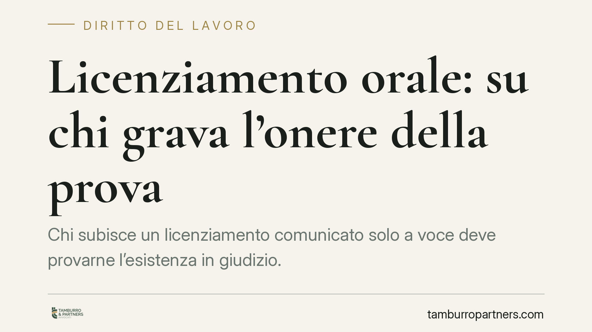

Licenziamento orale: su chi grava l'onere della prova
Chi subisce un licenziamento comunicato solo a voce deve provarne l'esistenza in giudizio. Lo ribadisce una recente pronuncia della Cassazione: non basta smettere di lavorare, serve dimostrare la volontà del datore di interrompere il rapporto. Un principio che pesa sulle strategie difensive e sulla raccolta delle prove fin dai primi giorni.

Il fatto
Il licenziamento orale è l'estromissione del lavoratore comunicata senza un atto scritto: una frase, un messaggio informale, la semplice interruzione dell'accesso al luogo di lavoro. È una prassi illegittima ma tutt'altro che rara, soprattutto nei rapporti di piccole dimensioni o in nero.
Una recente ordinanza della Corte di Cassazione è tornata sul punto chiave: in questi casi l'onere di provare che un licenziamento c'è stato ricade interamente sul lavoratore. La semplice cessazione della prestazione lavorativa, da sola, non dimostra nulla.
> Nota di redazione: il numero e la data dell'ordinanza sono in corso di verifica su banca dati prima della diffusione definitiva.
Inquadramento normativo
Il licenziamento deve essere comunicato per iscritto. Lo impone l'art. 2 della Legge 604/1966: la comunicazione orale è priva di forma scritta e, come tale, radicalmente inefficace. In teoria, quindi, il lavoratore ha ragione in partenza.
Il problema è processuale. Secondo l'art. 2697 del codice civile, chi vuol far valere un diritto in giudizio deve provare i fatti che ne sono il fondamento. Chi agisce lamentando un licenziamento orale deve quindi dimostrare, prima di tutto, che un atto di recesso datoriale è effettivamente esistito. Non deve provare la forma (orale), ma il fatto storico: la manifestazione di volontà del datore di porre fine al rapporto.
È qui che si colloca la nozione di fatto neutro. L'interruzione della prestazione è un comportamento ambiguo: può derivare da un licenziamento, ma anche da dimissioni, da un abbandono del posto o da un'assenza. Proprio perché compatibile con più ipotesi, non prova da sola l'intento espulsivo del datore.
Il regime dei termini
Un chiarimento importante riguarda i tempi per reagire. Il termine di decadenza di 60 giorni previsto dall'art. 6 della Legge 604/1966 riguarda l'impugnazione del licenziamento comunicato per iscritto.
Secondo l'orientamento prevalente, il licenziamento orale — essendo inefficace, quando non addirittura inesistente come atto — non è soggetto a quel termine di decadenza. L'azione resta assoggettata alla prescrizione ordinaria. Questo non significa poter attendere a lungo: più passa il tempo, più diventa difficile ricostruire i fatti e reperire testimonianze. La reattività conta, anche quando la legge non impone un termine breve.
Implicazioni pratiche
Per il lavoratore il messaggio è concreto: avere ragione nel merito non basta se non si riesce a provare il fatto in giudizio. La partita si gioca sulle prove, e queste vanno costruite subito, prima che le circostanze si dispersino.
Sono utilizzabili testimonianze di colleghi o terzi presenti, scambi scritti (messaggi, e-mail, chat aziendali) e qualsiasi documento che riveli la volontà datoriale di chiudere il rapporto. Sul fronte delle registrazioni audio, la giurisprudenza ne ammette l'uso come prova quando chi registra ha partecipato alla conversazione; restano però cautele sul trattamento dei dati e sui limiti di diffusione, che vanno valutate caso per caso.
Per il datore di lavoro, la lezione è speculare: gestire la cessazione del rapporto solo a voce espone a contenziosi e a esiti incerti, oltre che alle sanzioni per l'illegittimità del recesso.
Cosa fare in concreto
- Fissa subito i fatti per iscritto: annota data, ora, luogo e parole della comunicazione di licenziamento, e i nomi di chi era presente.
- Conserva ogni traccia digitale: messaggi, e-mail, badge, turni, accessi. Non cancellare nulla, anche se sembra irrilevante.
- Invia una comunicazione formale al datore (lettera o PEC) in cui contesti l'estromissione e chiedi di riprendere servizio o di ricevere il licenziamento in forma scritta: metti a verbale la tua versione.
- Individua i testimoni disponibili a confermare l'accaduto e raccogline i recapiti finché i rapporti sono recenti.
- Prima di agire, è opportuno un confronto con un legale per valutare prove disponibili, strategia e tempistiche.
In sintesi
Il licenziamento orale è vietato e inefficace, ma la sua esistenza va dimostrata da chi lo subisce. La mera cessazione del lavoro non prova nulla: senza elementi che rivelino la volontà del datore, il ricorso rischia di non reggere. La prova si costruisce nei primi giorni, non in udienza.
---
Contributo informativo a cura di Tamburro & Partners Avvocati — Avv. Giuseppe Tamburro. Non costituisce parere legale.
Ogni storia di lavoro ha i suoi tempi.
Se gestisci HR e vuoi un confronto su contenzioso, ispezioni o licenziamenti, scrivi allo studio. Ti rispondiamo entro un giorno lavorativo.